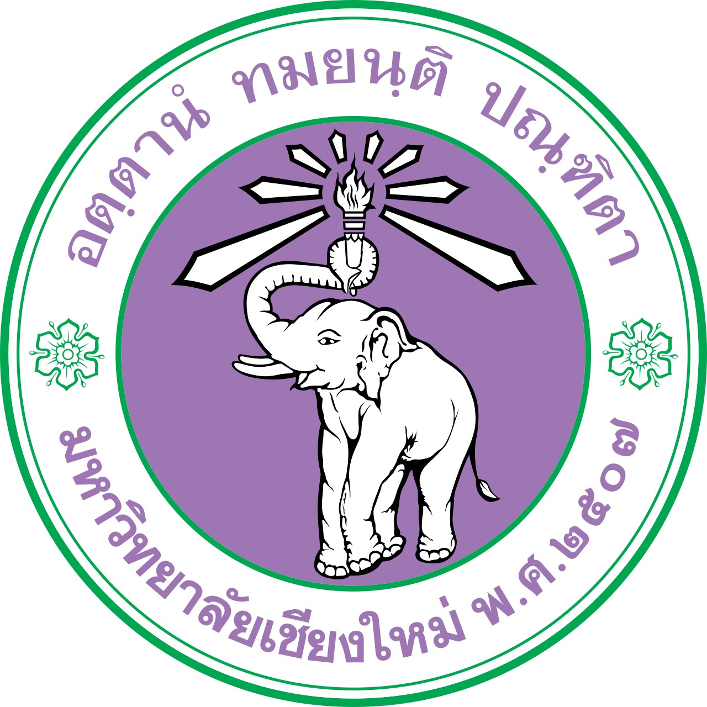

เป้าหมายทางการศึกษา
ข้าพเจ้ามีเป้าหมายเข้าศึกษาต่อใน คณะเทคนิคการแพทย์ มหาวิทยาลัยมหิดล เพราะเป็นสาขาที่ตรงกับความชอบด้านวิทยาศาสตร์และสุขภาพของข้าพเจ้า
จากการเรียนและการทำโครงงานที่ผ่านมา ข้าพเจ้าชอบการทดลอง การวิเคราะห์ และการหาคำตอบจากสิ่งที่สงสัย จึงอยากเรียนรู้เกี่ยวกับการตรวจวิเคราะห์ทางห้องปฏิบัติการ และนำความรู้ไปใช้ช่วยเหลือและดูแลสุขภาพของผู้อื่นในอนาคต